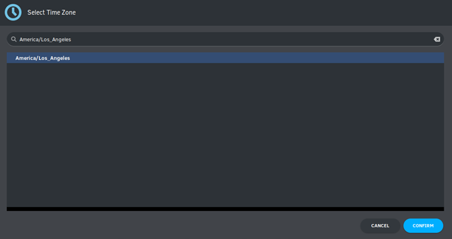
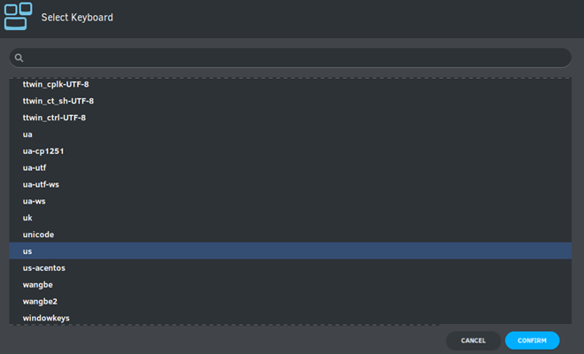
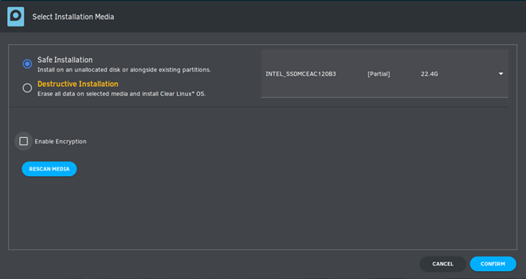
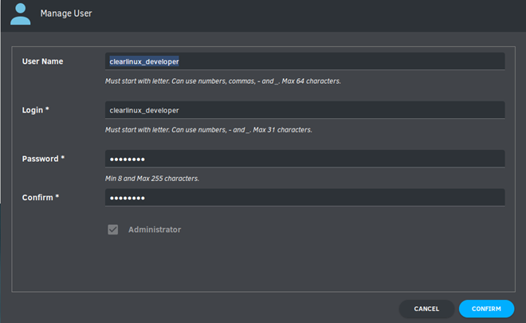
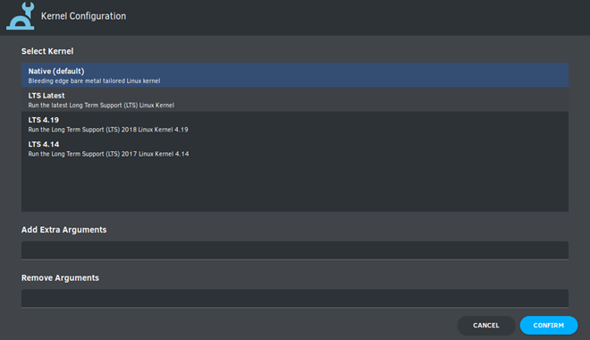
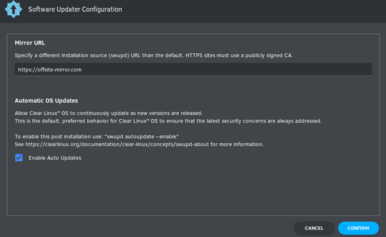

Install Clear Linux* OS from the live desktop
This page explains how to boot the Clear Linux* OS live desktop image, from which you can install Clear Linux OS or explore without modifying the host system.
System requirements
Before installing Clear Linux OS, verify that the host system supports the installation:
Preliminary steps
Visit our Downloads page.
Download the file
clear-<release number>-live-desktop.iso, also called the Clear Linux OS Desktop.Note
<release-number> is the latest Clear Linux OS auto-numbered release.
Verify and decompress the file per your OS.
Follow your OS instructions to create a bootable USB drive.
Install from live image
After you download and burn the live desktop image on a USB drive, follow these steps.
Insert the USB drive into an available USB slot.
Power on the system.
Open the system BIOS setup menu by pressing the F2 key. Your BIOS setup menu entry point may vary.
In the setup menu, enable the UEFI boot and set the USB drive as the first option in the device boot order.
Save these settings, e.g. F10, and exit.
Reboot the target system.
Select Clear Linux OS in the boot menu, shown in Figure 1.

Figure 1: Clear Linux OS in boot menu
Software (optional)
Explore Clear Linux OS bundles and other software. Double-click the Software icon from the Activities menu, shown in Figure 2. Ensure a network connection exists before launching the Software application.
Note
While running the Clear Linux OS live desktop image, the Software application is intended only for exploration. Do not attempt to install applications during exploration.
Launch the Clear Linux OS installer
After the live desktop image boots, scroll over the vertical Activities menu at left.
Click the Clear Linux OS penguin icon to launch the installer, shown in Figure 2.

Figure 2: Clear Linux OS installer icon
After the installer is launched, it will appear as shown in Figure 3.

Figure 3: Clear Linux OS OS Desktop Installer
In Select Language, select a language from the options, or type your preferred language in the search bar.
Select Next.
Checking prerequisites
The installer automatically launches Checking Prerequisites, which checks your target system for compatibility and network connectivity.
After the installer shows Prerequisites passed, select Next to proceed with installation.
{kind=link}
Figure 4: Checking Prerequisites
Network Proxy (optional)
- Configure Network Proxy settings.
- In the top right menu bar, select the Power button.
- Select Wired Connected and then Wired Settings.
- In Network Proxy, select the Gear icon to view options.
- Select an option from Automatic, Manual or Disabled.
- Close Network Proxy.
- Close Settings.
Minimum installation requirements
To fulfill minimum installation requirements, complete the Required options. We also recommend completing Advanced options.
Note
- The Install button is only highlighted after you complete Required options.
- Check marks indicate a selection has been made.
- An Internet connection is required. You may want to launch a browser prior to installation to verify your Internet connection.
Clear Linux OS Desktop Installer
The Clear Linux OS Desktop Installer Main Menu appears as shown in Figure 5. To meet the minimum requirements, enter values in all submenus for the Required options. After you complete them, your selections appear below submenus and a check mark appears at right.

Figure 5: Clear Linux OS Desktop Installer - Main Menu
Required options
Select Time Zone
From the Main Menu, select Select Time Zone. UTC is selected by default.
In Select Time Zone, navigate to the desired time zone. Or start typing the region and then the city. (.e.g.,
America/Los_Angeles).Select Confirm.
Figure 6: Select System Time Zone
{kind=link}
Select Keyboard
From the Main Menu, select Select Keyboard.
Navigate to your desired keyboard layout. We select “us” for the United States.
Select Confirm.
Figure 7: Select Keyboard menu
{kind=link}
Select Installation Media
From the Main Menu, select Select Installation Media.
Choose an installation method: Safe Installation or Destructive Installation.
Figure 8: Select Installation Media
{kind=link}
Safe Installation
Use this method to safely install Clear Linux OS on media with available space, or alongside existing partitions, and accept the Default partition schema. If enough free space exists, safe installation is allowed.
Note
Clear Linux OS allows installation alongside another OS. Typically, when you boot your system, you can press an F key to view and select a bootable device or partition during the BIOS POST stage. Some BIOSes present the Clear Linux OS partition, and you can select and boot it. However, other BIOSes may only show the primary partition, in which case you will not be able boot Clear Linux OS. Be aware of this possible limitation.
Destructive Installation
Use this method to destroy the contents of the target device, install Clear Linux OS on it, and accept the Default partition schema.
Disk encryption
For greater security, disk encryption is supported using LUKS. Encryption is optional.
To encrypt the root partition, select Enable Encryption, as shown in Figure 9.

Figure 9: Enable Encryption
When Encryption Passphrase appears, enter a passphrase.

Figure 10: Encryption Passphrase
Note
Minimum length is 8 characters. Maximum length is 94 characters.
Enter the same passphrase in the second field.
Select Confirm in the dialogue box.
Note
Confirm is only highlighted if passphrases match.
Select Confirm in submenu.
Manage User
In Required Options, select Manage User.
In User Name, enter a user name.
Figure 11: Manage User
In Login, create a login name. It must start with a letter and can use numbers, hyphens, and underscores. Maximum length is 31 characters.
In Password, enter a password. Minimum length is 8 characters. Maximum length is 255 characters.
In Confirm, enter the same password.
Note
Administrator rights are selected by default. For security purposes, the default user must be assigned as an Administrator.
Select Confirm.
Note
Select Cancel to return to the Main Menu.
{kind=link}
Modify User
In Manager User, select Manage User.
Modify user details as desired.
Select Confirm to save the changes you made.
Note
Optional: Select Cancel to return to the Main Menu to revert changes.
Optional: Skip to Finish installation.
Telemetry
Choose whether to participate in telemetry. Telemetrics is a Clear Linux OS feature that reports failures and crashes to the Clear Linux OS development team for improvements. For more information, see Telemetrics.
From Required Options, select Telemetry.
Select Yes.

Figure 12: Enable Telemetry
If you don’t wish to participate, select No.
Advanced options
After you complete the Required options, we recommend completing Advanced options–though they’re not required. Doing so customizes your development environment, so you’re ready to go immediately after reboot.
Note
You can always add more bundles later with swupd.
Bundle Selection
On the Advanced menu, select Bundle Selection
Select your desired bundles.

Figure 13: Bundle Selection
Select Confirm.
View the bundles that you selected.

Figure 14: Bundle Selections - Advanced Options
Optional: Skip to Finish installation.
Assign Hostname
In Advanced Options, select Assign Hostname.
In Hostname, enter the hostname only (excluding the domain).

Figure 15: Assign Hostname
Note
Hostname does not allow empty spaces. Hostname must start with an alphanumeric character but may also contain hyphens. Maximum length of 63 characters.
Select Confirm.
Optional: Skip to Finish installation.
Kernel Configuration
In Kernel Configuration, navigate to select your desired kernel. Native is selected by default.
Figure 16: Kernel Configuration
To add arguments, enter the argument in Add Extra Arguments.
To remove an argument, enter the argument in Remove Arguments.
Select Confirm.
{kind=link}
Software Updater Configuration
In Advanced Options, select Software Updater Configuration.
In Mirror URL, follow the instructions if you wish to specify a different installation source.
Enable Auto Updates is selected by default. If you do not wish to enable automatic software updates, uncheck the box.
Figure 17: Software Updater Configuration
Select Confirm.
{kind=link}
Finish installation
When you are satisfied with your installation configuration, select Install.

Figure 18: Finish installation
If you do not enter a selection for all Required Options, the Install button remains disabled, as shown in Figure 19. Return to Required Options and make selections.

Figure 19: Required Options - Incomplete
After installation is complete, select Exit.
Shut down the target system.
Remove the USB or any installation media.
Power on your system.
Note
Allow time for the graphical login to appear. A login prompt shows the administrative user that you created.
Log in as the administrative user.
Congratulations. You successfully installed Clear Linux OS.
Default partition schema
Create partitions per requirements in Table 1.
| FileSystem | Label | Mount Point | Default size |
|---|---|---|---|
| VFAT(FAT32) | boot | /boot | 150MB |
| linux-swap | swap | 256MB | |
| ext[234] or XFS | root | / | Size depends upon use case/desired bundles. |